принципы, на которые реально можно опираться каждый день — без диет и запретов, по желанию, в своём темпе.
философия
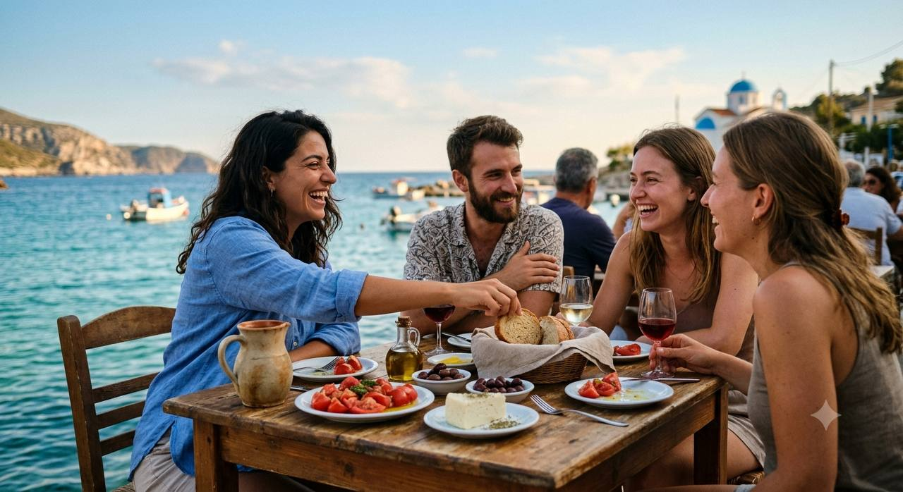
Едим так, будто живём у моря
Тарелка — это цвет: спелый томат, сладкий перец, тёмные маслины, оливковое масло первого отжима — густое, с лёгкой горчинкой. Хрустящий огурец, ломтик выдержанного сыра, немного лимона и крупной соли. Овощи — основа тарелки, а не гарнир, горсть орехов — вместо десерта, зелень и специи — вместо лишнего сахара и соуса из банки. Просто, ярко, без спешки: еда, которую хочется рассмотреть, а не просто доесть. Чем больше оттенков на тарелке — тем больше в ней того, что действительно нужно телу.
инсулинорезистентность
Инсулинорезистентность — когда клетки хуже реагируют на инсулин, сахар и жир накапливаются в печени и поджелудочной. Без изменений это со временем ведёт к диабету 2 типа. Крупное британское исследование (DiRECT, Ньюкасл) показало: похудение убирает жир из печени/поджелудочной — у 46% участников диабет ушёл в ремиссию за год, у 36% держалось два года, а из них почти четверть — ещё пять лет после этого. Ремиссия диабета — официально признанный медицинский термин с 2021 года, держится, пока держится вес и образ жизни. А значит и более раннюю стадию, саму инсулинорезистентность, тем более можно развернуть назад, пока она ещё не стала диабетом.
средиземноморская диета
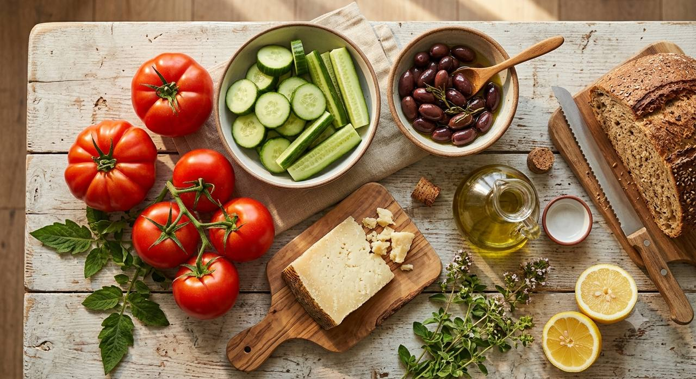
Из всех подходов к питанию у неё самая надёжная и проверенная доказательная база — не одно исследование, а согласованный результат многих. Рандомизированное исследование PREDIMED показало снижение серьёзных сердечно-сосудистых событий на 30%, а по нескольким крупным метаанализам — снижение риска основных видов рака. Основа — овощи, цельные злаки, рыба, оливковое масло, орехи, сыр.
каждый день
несколько раз в неделю
редко
качество жира
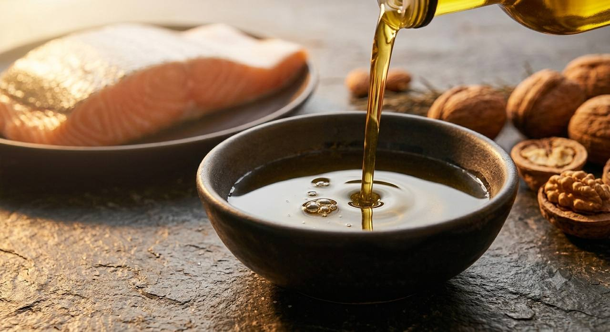
Тип жира важнее, чем количество. Оливковое масло, рыба, орехи снижают «плохой» холестерин и повышают «хороший» лучше рафинированных углеводов. Приоритет: оливковое масло, рыба, орехи вместо трансжиров и рафинированных углеводов.
обработанная еда
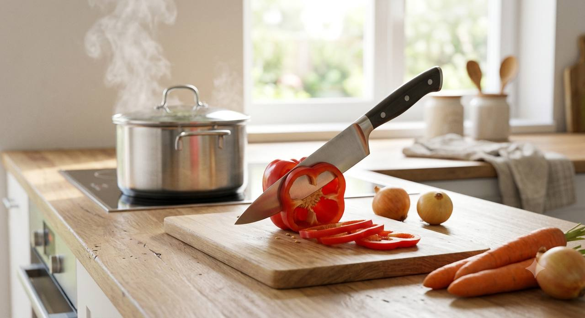
Приоритет: минимально обработанная еда и домашняя готовка как основа, обработанное — по минимуму.
микробиом
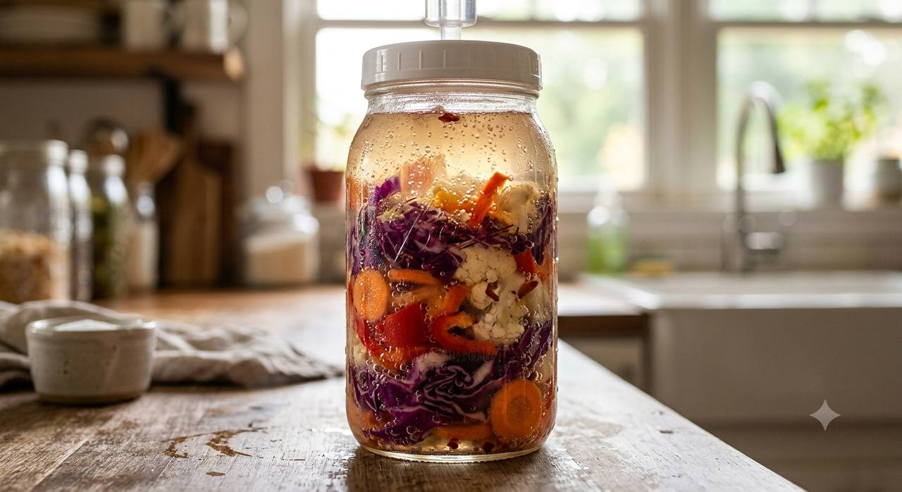
клетчатка становится пользой не сама по себе
Чтобы клетчатка превратилась в бутират (короткоцепочечную жирную кислоту, которая кормит и защищает стенку кишечника), нужны конкретные бактерии — они не продаются как обычный пробиотик с полки (это чувствительные к кислороду виды, их пока не умеют стабилизировать в капсулах). Единственный рабочий путь — кормить те бактерии, что уже есть: псиллиум и инулин, вместе с разнообразием растений выше.
воспаление
Хроническое вялотекущее воспаление — измеримый маркер (СРБ, ИЛ-6), который напрямую связан с сердцем, диабетом, раком и старением кожи — это не отдельная тема, а общий знаменатель почти всего, что уже разобрано выше.
омега-3
1-2г ЭПК+ДГК в деньрабочая доза с доказанным эффектом. Верхний безопасный предел — 3г в день из еды и добавок вместе (жирная рыба, добавка рыбьего жира).
энергия
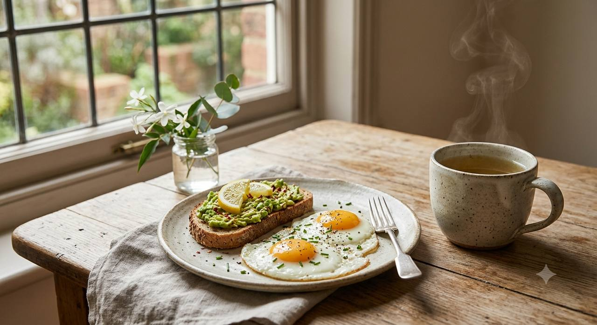
Стабильный сахар в крови и работающие митохондрии — вот что реально даёт ровную энергию в течение дня, не стимуляторы. По сути это те же «важные привычки питания» (чистые промежутки, белок в приём), просто с другого угла: скачки инсулина истощают, стабильность — питает.
сульфорафан
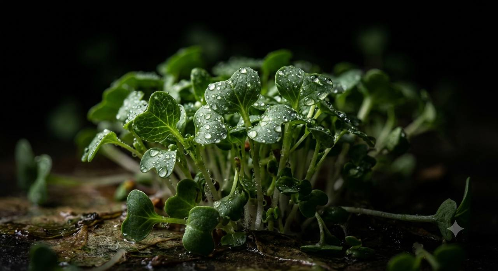
БАД с проростков брокколи свежие ростки брокколи (в 100 раз активнее зрелой брокколи) трудно найти в России — рабочая альтернатива добавка. Важно: смотреть на этикетке «активная мирозиназа» — без этого фермента предшественник не превращается в сульфорафан.
20-40мг активного сульфорафана в день
циклическое голодание-имитация (FMD)
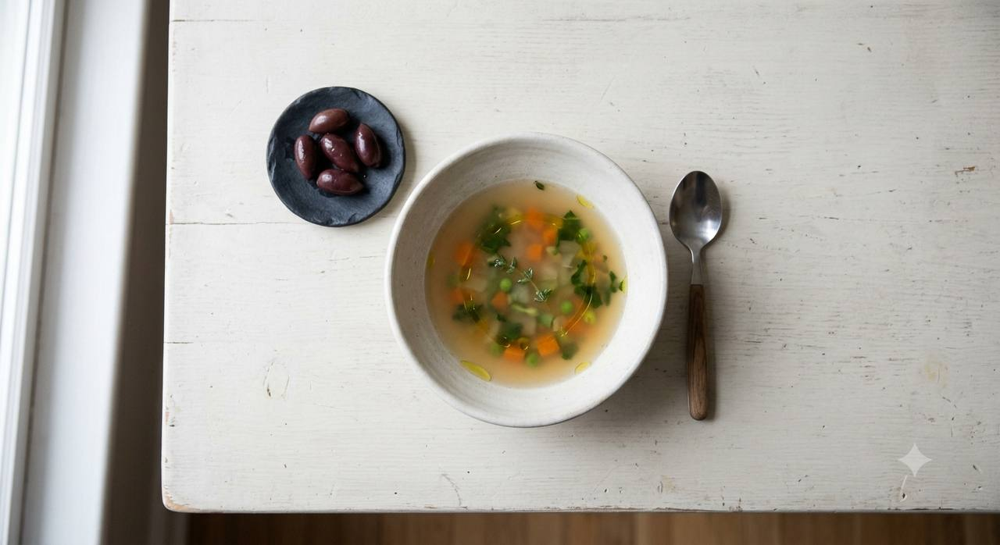
5 дней подряд низкобелковой растительной еды с урезанной калорийностью (день 1 — ~1100 ккал, дни 2-5 — ~800 ккал) — имитирует эффект полного голодания, запускает обновление клеток на уровне, недостижимом обычным окном голода.
Частота у здоровых2 раза в год.
💊 Это не то же самое, что ежедневное окно голода — серьёзное вмешательство в питание на несколько дней. Если есть сахароснижающие препараты, частоту и саму возможность стоит обсудить с врачом лично для себя, не по общей схеме.
саркопения
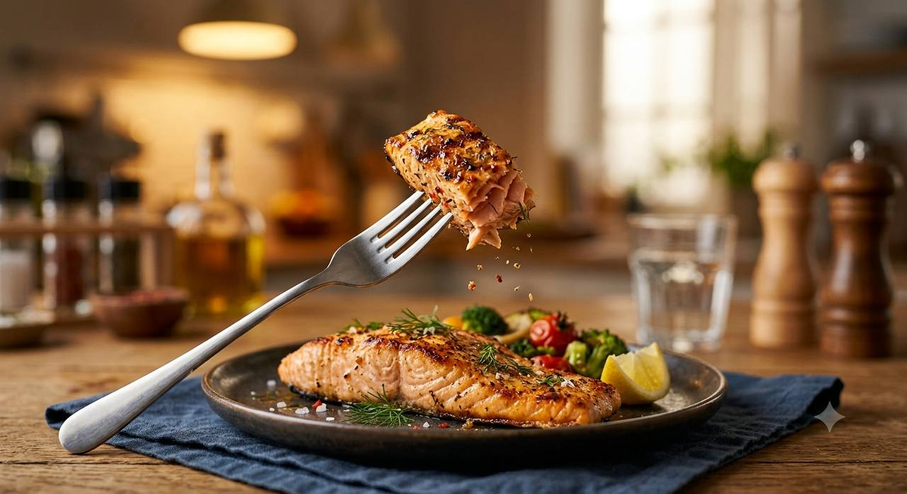
📅 показывается с 40 лет
Мышечная масса начинает снижаться примерно с 30 лет, незаметно. После 40 — ускоряется, около 8% за десятилетие. После 70 — резко, около 15% за десятилетие: без противодействия к этому возрасту можно потерять 25-40% мышц молодости.
Синтез мышечного белка почти не запускается при дозе меньше ~20г за один приём — нужно 25-30г белка именно за один приём пищи, размазать по дню тонким слоем не работает. Для сохранения мышц с возрастом официальную норму (0.8г/кг) считают заниженной — реальный ориентир 1.6-2г белка на кг веса в день.
аутофагия
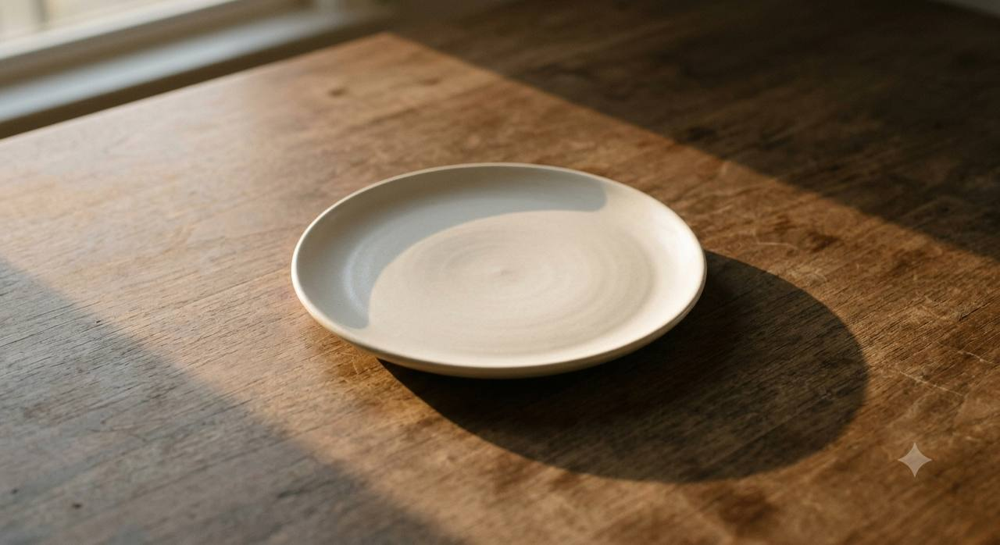
Аутофагия — естественный процесс уборки клеток, когда организм разбирает и перерабатывает повреждённые/старые части клеток на запчасти. Ни у людей, ни у животных в дикой природе никогда не было гарантированного доступа к еде каждые несколько часов — организм эволюционно настроен именно на периоды без еды, а не на постоянный приток топлива. Голод — это не стресс для тела, это его обычный, ожидаемый режим.
Практика: чем дольше чистое окно без еды (от 14 часов и дальше), тем активнее идёт этот процесс уборки.
🫙 Если беспокоит застой желчи (склонность к камням/густой желчи) — начинать с более короткого окна (12-13 часов) и следить, чтобы первый приём после голода включал немного жира (яйцо, авокадо, оливковое масло) — это стимулирует отток желчи мягко, без риска.
красота: кожа изнутри
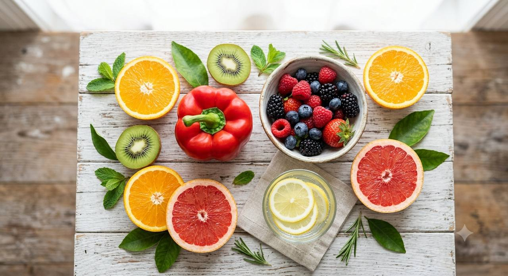
Сахар в крови необратимо связывается с коллагеном (гликация) — это делает его жёстким и ломким, буквально ускоряя старение кожи. У людей с низкоуглеводным рационом коллаген перекрёстно сшивается на 30% меньше, чем у тех, кто ест много рафинированных углеводов — то есть всё, что уже есть выше про сахар и промежутки между едой, работает и здесь. Способ готовки тоже играет роль: варка и пар дают в разы меньше повреждающих соединений, чем жарка и гриль — та же еда, разный эффект на кожу просто от способа готовки.
коллаген — реальные данные, не только маркетинг
анализы, которые здесь имеют смысл
важные привычки питания
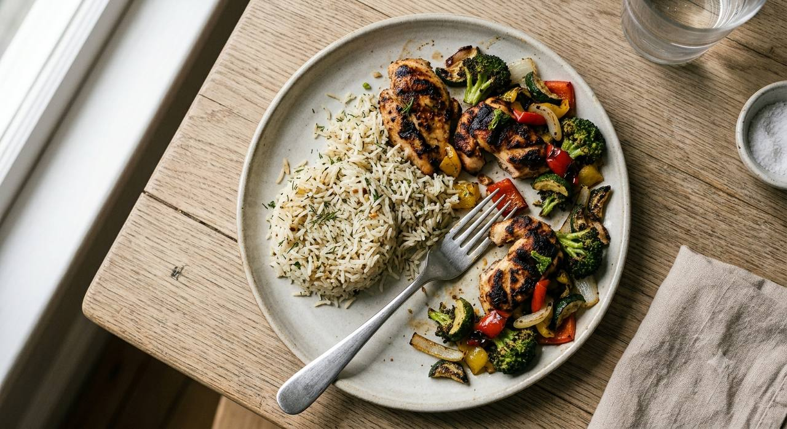
включить в «Мой день»?
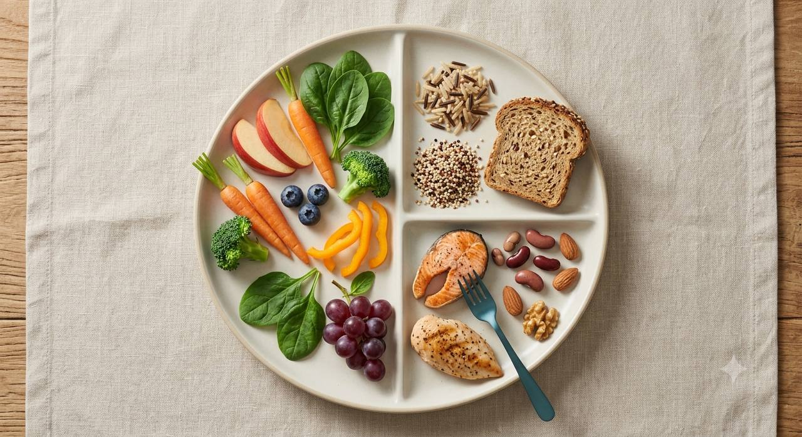
🍽️ Тарелка обеда/ужина
½ овощи и фрукты · ¼ цельные злаки · ¼ белок
овощи, фруктызлакибелок
во сколько сегодня ужин?
время меняется каждый день — вводишь заново, окно голода можно не трогать
окно голода: 14ч
не завтракать раньше 09:00
так это выглядит на «Мой день»
🍽️ Окно голодаотметь ужин выше, чтобы увидеть окно—